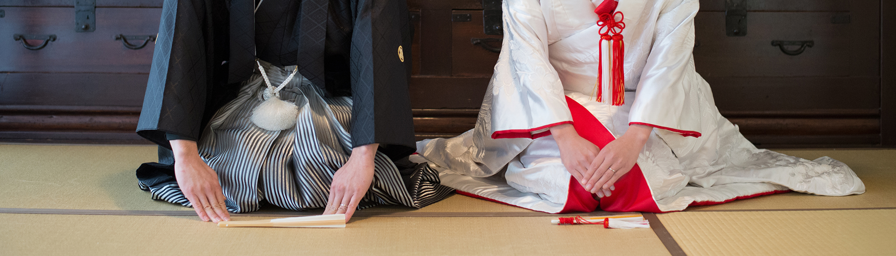
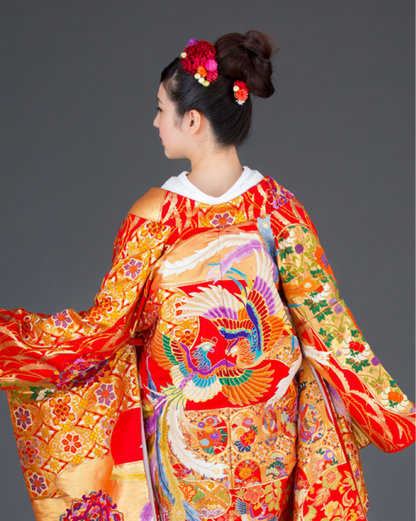
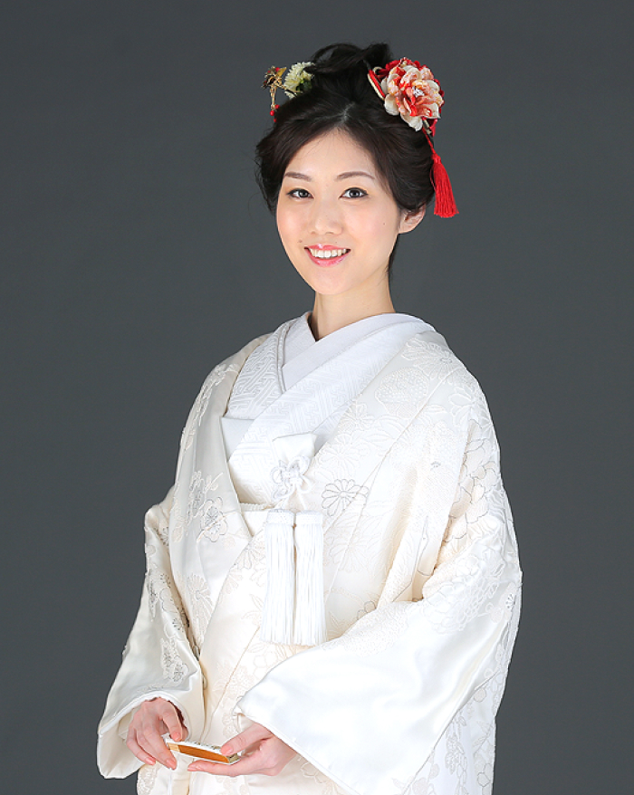
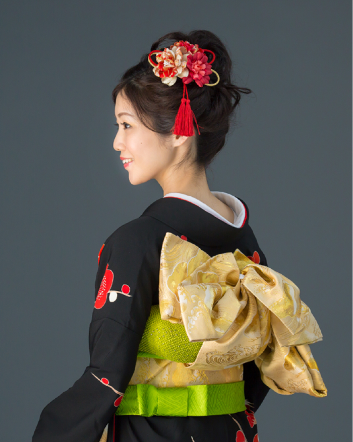

初めての方へ

花嫁衣装レンタルのいろは
和装には憧れるけれど、選び方がわからず戸惑っている花嫁様は多いです。
ポイントを抑えて、理想の和装花嫁になりましょう。
花嫁衣装の種類
-

色打掛
披露宴を華やかに彩る色打掛。和式のお食事会場はもちろん、ホテルでの披露宴でもその存在感を発揮します。織物から刺繍、染物など種類があり、色も定番の赤系だけでなく寒色系など多彩。
一覧を見る -

色打掛
昔から伝わる「和」の婚礼衣装。小物から草履まで全て白で統一する事により「真っ白な気持ちで参ります」と言う思いを込めたお衣装ですが、近年は裏紅の白無垢も人気です。
一覧を見る -

色打掛
打掛とは違い着物の裾を引きずったまま着用する婚礼衣装なので、料亭で披露宴をされる方におすすめ。着物と帯、小物の色を自分らしくコーディネイト出来るのも魅力のひとつ。
一覧を見る